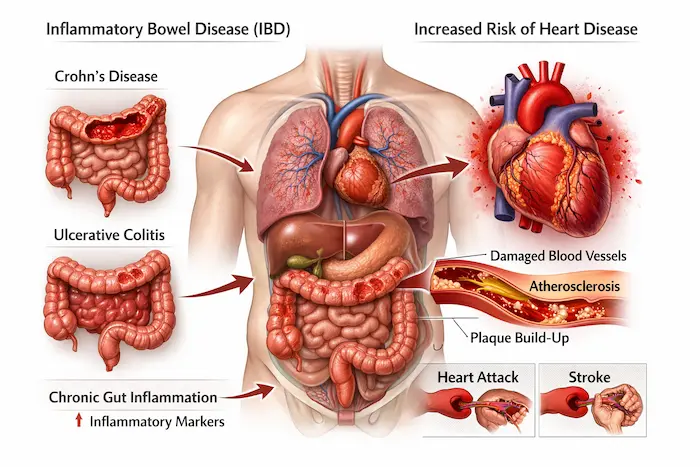
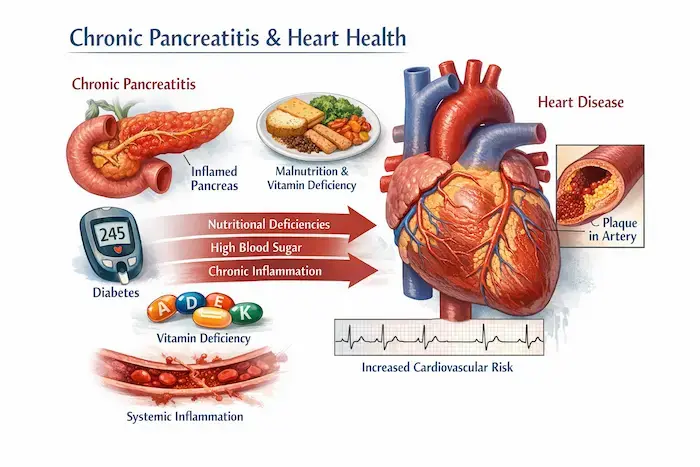
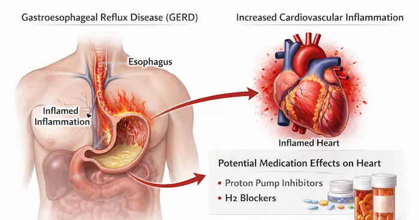
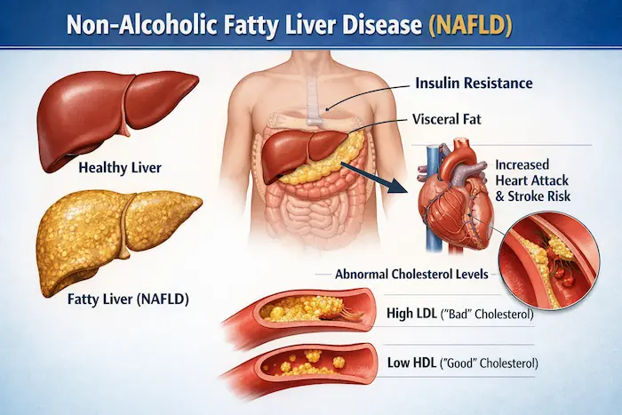
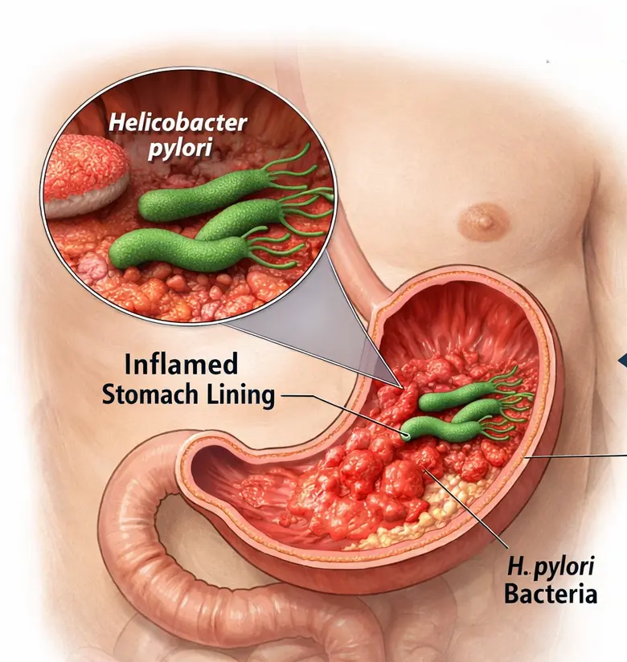

Your gut and heart are more connected than you might think. Emerging research reveals that gastrointestinal health plays a crucial role in cardiovascular wellness, with several GI diseases significantly increasing…
The Gut-Heart Connection
The gut microbiome—trillions of bacteria living in your digestive system—influences inflammation, cholesterol levels, and blood pressure throughout your body. When GI health deteriorates, it can trigger a cascade of effects that damage your cardiovascular system.
Major GI Diseases Linked to Heart Risk
Inflammatory Bowel Disease (IBD): Conditions like Crohn’s disease and ulcerative colitis create chronic inflammation that extends beyond the gut. Studies show IBD patients have a 10-25% higher risk of heart disease due to systemic inflammation damaging blood vessels.

Chronic Pancreatitis: This progressive inflammatory condition of the pancreas significantly impacts heart health. Chronic pancreatitis leads to malnutrition, diabetes, and chronic systemic inflammation—all major cardiovascular risk factors. The persistent inflammation can damage blood vessels and increase the risk of heart disease. Additionally, the malabsorption of fat-soluble vitamins affects heart function and vascular health.

Gastroesophageal Reflux Disease (GERD): While GERD itself may not directly cause heart disease, chronic inflammation in the esophagus can contribute to overall cardiovascular inflammation. Additionally, some GERD medications may affect heart health with long-term use.

Celiac Disease: Untreated celiac disease impairs nutrient absorption, potentially leading to deficiencies in heart-protective nutrients like B vitamins and magnesium. It also increases inflammation markers associated with atherosclerosis.
Non-Alcoholic Fatty Liver Disease (NAFLD): This increasingly common condition often accompanies metabolic syndrome and significantly raises heart attack and stroke risk through insulin resistance and abnormal cholesterol levels.

H. pylori Infection: This common stomach bacterium has been linked to increased atherosclerosis risk, though research is ongoing about the exact mechanisms.

How GI Problems Affect Heart Health
Chronic Inflammation: GI diseases release inflammatory molecules into the bloodstream that damage arterial walls and promote plaque buildup.
Nutrient Malabsorption: Poor gut health prevents absorption of essential vitamins and minerals needed for heart function.
Gut Dysbiosis: An imbalanced microbiome produces harmful metabolites like TMAO (trimethylamine N-oxide), which accelerates atherosclerosis.
Shared Risk Factors: Obesity, poor diet, and sedentary lifestyle contribute to both GI and heart problems.
Protecting Your Heart Through GI Health
Eat a Heart-Gut Friendly Diet: Focus on fiber-rich foods, fermented products, omega-3 fatty acids, and anti-inflammatory foods like berries and leafy greens.
Manage GI Conditions Proactively: Work with your doctor to control symptoms and inflammation through appropriate medications and lifestyle changes.
Support Your Microbiome: Consider probiotics, prebiotics, and diverse plant-based foods to maintain healthy gut bacteria.
Address Risk Factors: Control weight, exercise regularly, manage stress, and avoid smoking, all benefit both systems.
Regular Screenings: If you have a GI disease, discuss cardiovascular screening with your healthcare provider, as you may need more frequent monitoring.
The Bottom Line
Your digestive health is a window into your overall wellness. By maintaining a healthy gut through proper nutrition, stress management, and appropriate medical care, you’re simultaneously protecting your heart. If you have a chronic GI condition, view it as an opportunity to be proactive about cardiovascular health, your gut and heart will thank you.
Remember: always consult healthcare professionals for personalized advice, especially if you have existing GI or heart conditions.
Have a question this article does not answer?
Send us your reports. A specialist reviews them before you travel, so the first visit begins with a plan rather than a repeat test.